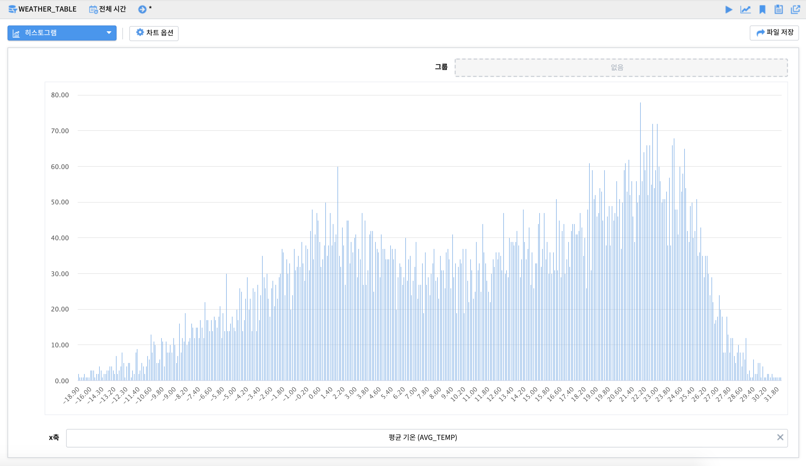
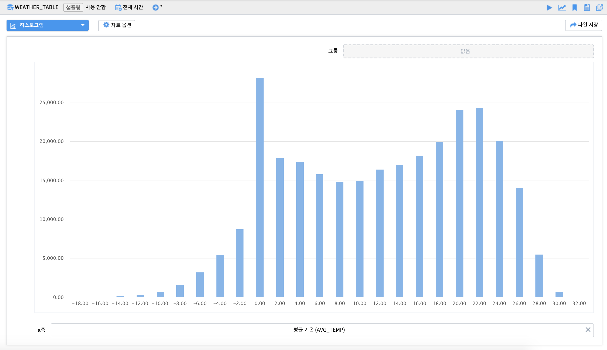
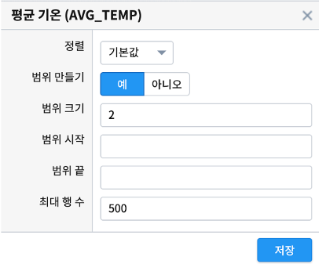
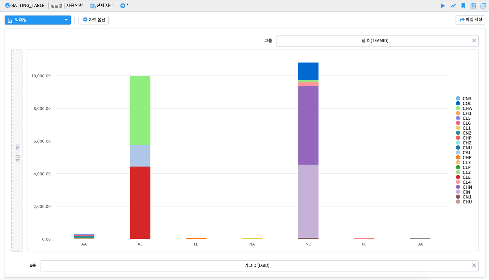
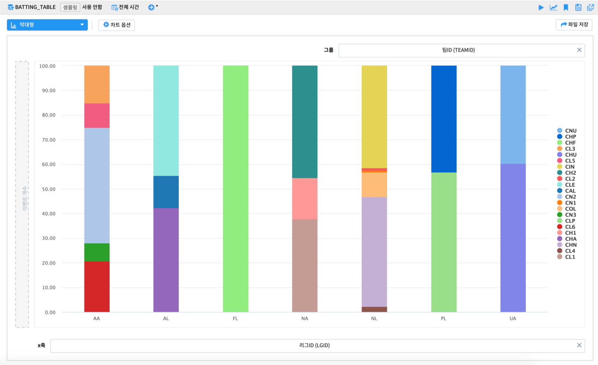
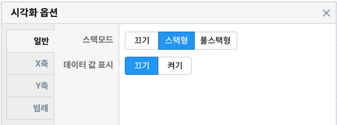
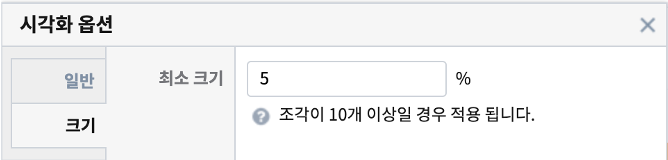

3.1.2. 분포형 그래프¶
3.1.2.1. 히스토그램 - 단일 히스토그램¶
연속형 변수를 일정 구간을 나누어 그 빈도를 그래프로 나타낸 것입니다. x축의 구간 간격(bin size) 조정을 통해 집계 빈도를 조정 할 수 있습니다.
기본형
기본형 - 구간 간격 조정
x축 옵션
x축에 설정한 변수를 클릭하면 축 옵션을 이용가능합니다. 특히 범위 만들기를 〈예’로 변경하여 구간 간격(bin size; range size)를 조정 할 수 있습니다.
축 옵션에 관한 자세한 사항은 매뉴얼을 참조하시기 바랍니다.
3.1.2.2. 히스토그램 - 그룹별 히스토그램¶
연속형 변수를 일정 구간을 나누어 그 빈도를 그래프로 나타낸 것입니다. 그룹에 변수를 매핑하여 그룹간 분포를 비교할 수 있습니다.
3.1.2.4. 막대형 그래프 - 집계형¶
범주형 변수의 빈도를 막대 그래프로 나타낸 것입니다. y축(이벤트 개수)에 원하는 변수를 넣어서 집계(합계, 평균 등)된 막대그래프를 표현할 수 있습니다.
x축과 y축에 설정한 변수를 각각 클릭하면 축 옵션을 이용가능합니다. x축의 순서(오름차순/내림차순)나 y축의 집계 방식(합계, 평균, 최대, 최소 등)을 변경할 수 있습니다. 차트 옵션을 이용하면 결측값 표시여부, 축 제목, 범례 위치, 범례 표시 여부 등 다양한 시각화 옵션 조정이 가능합니다.
축 옵션 및 차트 옵션에 관한 자세한 사항은 매뉴얼을 참조하시기 바랍니다.
3.1.2.5. 막대형 그래프 - 스택형/풀스택형¶
범주형 변수의 그룹별 빈도를 막대 그래프로 나타낸 것입니다. 현재 x축 변수에서 그룹 변수가 차지하고 있는 빈도를 확인 가능합니다.
스택형은 데이터의 빈도를 그룹별로 누적 빈도를, 풀스택형은 전체를 기준으로 그룹별 상대적 비율(누적퍼센트)을 집계해 줍니다.
스택형
풀스택형
차트 옵션
차트 상단의 차트 옵션을 이용하면 스택형/풀스택형의 모드 유형, 데이터 값의 표현 여부 등을 조정 할 수 있습니다.
축 옵션 및 차트 옵션에 관한 자세한 사항은 매뉴얼을 참조하시기 바랍니다.
3.1.2.6. 원형 그래프 - 기본형¶
원형 그래프는 섹터로 구분된 원 그래프이며 각 파이 섹터는 일부 관련 정보의 크기를 표시합니다. 원형 그래프는 전체를 기준으로 한 부분의 상대적 크기를 표시하는 데 사용됩니다.
기본형은 그룹의 단순 빈도를 나타낼때 사용할 수 있습니다.
차트 옵션
차트 옵션을 통해 최소 조각의 크기를 설정하여 그보다 작은 크기의 조각들을 그외(other) 조각으로 병합할 수 있습니다.
3.1.2.7. 원형 그래프 - 집계형¶
원형 그래프는 섹터로 구분된 원 그래프이며 각 파이 섹터는 일부 관련 정보의 크기를 표시합니다. 집계형은 변수의 집계값(합계, 평균 등)의 값을 파이 조각의 크기에 반영합니다.